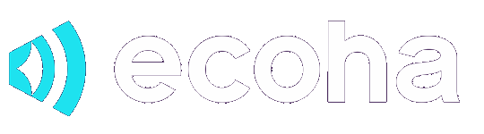

VIVA Educação
Programa de Educação Positiva e Bem-Estar
Proposta para o Município de Sousa-PB
Do bem-estar individual à cultura coletiva.
Em uma página
Transformar bem-estar em política educacional de Sousa.
Uma estratégia estruturante para a rede, orientada por diagnóstico, planejamento, formação, intervenção e monitoramento.
Não é uma sequência de palestras ou campanhas isoladas.
O que Sousa decide
2modelosVIVA Essencial ou VIVA Integral
2jornadas12 meses para implementar ou 24 meses para consolidar
1ponto de partidaO Diagnóstico VIVA da rede de Sousa
VIVA Educação · Sousa-PB02
Por que precisamos falar sobre isso?
1 em
cada 7
adolescentes de 10 a 19 anos apresenta condição de saúde mental.
OMS
21%
dos professores brasileiros relatam muito estresse no trabalho.
OCDE — TALIS 2024
28,9%
dos estudantes de 13 a 17 anos relatam tristeza na maior parte do tempo.
PeNSE 2024 / UNICEF
Cuidar do bem-estar tornou-se parte do desafio de educar.
VIVA Educação · Sousa-PB03
O desafio das redes
Sete frentes, ao mesmo tempo, no cotidiano escolar
01Estresse e sobrecarga
02Desafios socioemocionais
03Conflitos e relações
04Pertencimento
05Saúde mental
06Integração família-escola
07Necessidade de dados
Desafios simultâneos exigem resposta estruturada, não ações isoladas.
VIVA Educação · Sousa-PB04
HOJE
Ações isoladas
Respostas reativas
Iniciativas pontuais
COM O VIVA
Promoção
Prevenção
Desenvolvimento
Cultura de cuidado
VIVA Educação · Sousa-PB05
O VIVA Educação é um programa integrado de Educação Positiva e Bem-Estar para promover
bem-estar
desenvolvimento socioemocional
relações positivas
ambientes saudáveis
Estudantes · Professores · Gestores · Equipes escolares · Famílias · Comunidade
VIVA Educação · Sousa-PB06
Uma estratégia integrada para transformar bem-estar em cultura educacional
Desenvolvimento socioemocional
Nossa base
Psicologia Positiva aplicada à Educação
PEmoções positivas
EEngajamento
RRelacionamentos positivos
MSentido e propósito
ARealização
+ Desenvolvimento socioemocional · Promoção da saúde · Clima escolar
Aprender bem.Conviver bem.Viver bem.
VIVA Educação · Sousa-PB08
Seis perguntas que orientam todo o programa
Cultura de cuidadoQue comunidade estamos construindo?6
CompetênciasComo enfrento desafios e faço escolhas?5
PropósitoPor que aquilo que fazemos importa?4
1Bem-estarComo estou e como cuido de mim?
2ForçasComo desenvolvo meu potencial?
3RelaçõesComo convivemos?
VIVA Educação · Sousa-PB09
Da pessoa à comunidade
Bem-estar não é responsabilidade apenas individual.
EU
EU COM O OUTRO
EU NO MUNDO
NÓS
EUBem-estar, emoções, forças e autocuidado.
EU COM O OUTROEmpatia, comunicação, convivência e vínculos.
EU NO MUNDOPropósito, valores, autonomia e projeto de vida.
NÓSPertencimento, clima, participação e cultura.
VIVA Educação · Sousa-PB10
Onde o VIVA acontece?
Quatro espaços, um mesmo movimento
Sala de AulaSocioemocional integrado ao currículo e às práticas pedagógicas.
EscolaClima, liderança, relações e cultura institucional.
FamíliaOficinas, campanhas e fortalecimento da relação com a escola.
ComunidadeProjetos comunitários, cultura, esporte, ações territoriais e parcerias.
VIVA Educação · Sousa-PB11
Como funciona
Metodologia VIVA
Um ciclo contínuo de desenvolvimento orientado por evidências.
O programa é estruturado. A intervenção é personalizada.
01DiagnosticarConhecer a realidade.
02PlanejarTransformar dados em prioridades.
03AgirDesenvolver pessoas e transformar práticas.
04MonitorarAcompanhar resultados.
VIVA Educação · Sousa-PB12
Começamos pelos dados
Cada rede tem uma realidade. O VIVA começa por ela.
01Diagnóstico VIVAAs seis dimensões, com cada público.
02Linha de BaseA fotografia inicial dos indicadores.
03Mapa de PrioridadesO que demanda atenção e o que fortalecer.
04Plano VIVA SousaMetas, ações, responsabilidades e cronograma.
Imagem ilustrativa. Os indicadores reais são definidos no diagnóstico.
Sousa deixa de decidir apenas por percepção e passa a dispor de evidências locais.
VIVA Educação · Sousa-PB13
EIXO 1
Formação
Desenvolver quem transforma a educação
Gestores
Professores
Equipes escolares
Multiplicadores
EIXO 2
Implementação
Fazer a cultura acontecer
Campanhas
Workshops
Oficinas
Grupos de vivências
Projetos escolares
Atividades extraclasse
Experiências de bem-estar
Protagonismo estudantil
Família e comunidade
As experiências são definidas a partir das necessidades de cada rede.
VIVA Educação · Sousa-PB14
Imagine uma rede em que...
o professor aprende a cuidar de si enquanto aprende a cuidar de suas relações;
o estudante desenvolve recursos para compreender emoções, fazer escolhas e construir seu futuro;
a escola cria experiências que fortalecem vínculos e pertencimento;
as famílias participam desse processo;
os estudantes levam projetos para seu território;
Educação, Saúde e Assistência dialogam;
e a Secretaria consegue acompanhar tudo isso por meio de dados.
VIVA Educação · Sousa-PB15
Protagonismo e rede de cuidado
De destinatários a agentes da cultura VIVA
Protagonismo estudantilEmbaixadores VIVA, lideranças juvenis e núcleos escolares em campanhas, projetos e ações comunitárias.
Articulação intersetorialEducação, Saúde, Assistência Social, Rede de Proteção e Comunidade conectadas.
A escola é preparada para atuar dentro de suas competências.
Identificar, sem diagnosticar.
Acolher, sem assumir tratamento.
Orientar e encaminhar responsavelmente.
O VIVA não realiza atendimento psicológico ou tratamento clínico: atua em promoção, prevenção, educação, orientação e fortalecimento da rede.
VIVA Educação · Sousa-PB16
Tecnologia e dados
Plataforma VIVA
Aprender
Praticar
Compartilhar
Orientar
Acompanhar
Como estamos?Indicadores diagnósticos das seis dimensões.
O que estamos fazendo?Indicadores de processo: participação, alcance e adesão.
O que está mudando?Indicadores de resultado a partir da linha de base.
Telas ilustrativas.
VIVA Educação · Sousa-PB17
6DimensõesBem-estar · Forças · Relações · Propósito · Competências · Cultura
4EspaçosSala de Aula · Escola · Família · Comunidade
4MovimentosDiagnosticar · Planejar · Agir · Monitorar
2EixosFormação + Implementação
1TransformaçãoDo bem-estar individual à cultura coletiva.
VIVA Educação · Sousa-PB18
A proposta
VIVA Educação
em Sousa
Três etapas. Três camadas. Dois modelos de contratação.
VIVA Educação · Sousa-PB19
Como o projeto se organiza
Do diagnóstico aos resultados, em três etapas
Etapa 1Conhecer e PlanejarDiagnósticoLinha de BasePrioridadesPlano VIVA Sousa
Etapa 2Implementar
Camada 1Formação e Desenvolvimento Profissional
Camada 2Cultura VIVA nas Escolas
Camada 3Rede de Cuidado e Suporte Especializado Integral
Etapa 3Acompanhar e AvaliarMonitoramentoAvaliaçãoResultadosRelatórios
VIVA Educação · Sousa-PB20
Etapa 2 · Implementar
CAMADA 1
Formação e desenvolvimento profissional
1formação por mês,
em calendário estruturado
Professores
Diretores e equipes pedagógicas
Equipes de apoio
Multiplicadores
Presencial e online, com plataforma de conteúdos e materiais de apoio.
CAMADA 2
Cultura VIVA
nas escolas
1calendário anual de
experiências e intervenções
Campanhas e ações educativas
Oficinas e projetos escolares
Atividades extraclasse
Experiências de bem-estar
Embaixadores VIVA
VIVA Família
Projetos comunitários
Ações definidas a partir do diagnóstico da rede.
VIVA Educação · Sousa-PB21
Camada 3 · Rede de cuidado e suporte especializado
Exclusivo do VIVA Integral
03
Núcleos VIVA de Apoio Multiprofissional
Psicólogo, psicopedagogo e fonoaudiólogo. 2 vezes por semana.
01
Núcleo VIVA de Mediação e Convivência
Círculos de paz e práticas restaurativas. 1 vez por semana.
16hCoordenaçãopor semana · 64h mensais
16hPsicólogospor semana, por psicólogo · 64h mensais
12hFonoaudiólogo e Psicopedagogopor semana · 48h mensais
Caráter educacional, preventivo e orientativo. Não configura acompanhamento psicoterapêutico ou tratamento clínico.
Localização e despesas relativas aos Núcleos: a cargo da Prefeitura.
VIVA Educação · Sousa-PB22
Etapa 3 · Acompanhar e avaliar
O que Sousa tem em mãos ao longo do programa
Linha de Base VIVA
Mapa de Prioridades
Plano VIVA Sousa
Monitoramento das ações e da participação
Indicadores definidos no diagnóstico
Avaliações periódicas e reavaliação
Relatórios de acompanhamento
Relatório final de resultados
Recomendações para o ciclo seguinte
VIVA Educação · Sousa-PB23
Modelos de contratação
Duas formas de levar o VIVA para Sousa
VIVA Essencial
VIVA Integral
Diagnóstico e Plano VIVA
✓
✓
Formação e Desenvolvimento
✓
✓
Cultura VIVA nas Escolas
✓
✓
Monitoramento e Avaliação
✓
✓
Rede de Cuidado / Núcleos VIVA
—
✓ Incluída
Plataforma
Conteúdos e materiais de apoio
Ampliada
VIVA Educação · Sousa-PB24
Jornada
Quanto tempo Sousa quer para consolidar?
12 mesesImplementar
Diagnosticar · Planejar · Formar · Implementar · Monitorar · Reavaliar
24 mesesConsolidar
Ano 1: diagnóstico, estruturação, implantação e desenvolvimento.
Ano 2: monitoramento, aprofundamento, ajustes, ampliação, multiplicadores fortalecidos e consolidação.
Ciclos prorrogáveis, com acompanhamento longitudinal da rede.
VIVA Educação · Sousa-PB25
O próximo passo
Vamos começar o VIVA em Sousa?
Duas decisões colocam o programa em movimento. O investimento acompanha o modelo e a jornada escolhidos.
1Escolher o modeloVIVA Essencial ou VIVA Integral
2Definir a jornada12 ou 24 meses
3Formalizar a contrataçãoPrefeitura de Sousa e Ecoha
4Iniciar o Diagnóstico VIVAA base do Plano VIVA Sousa
VIVA Educação · Sousa-PB26
O que queremos transformar?
Pessoas mais preparadas.
Relações mais positivas.
Ambientes mais saudáveis.
Escolas mais acolhedoras.
Famílias mais participativas.
Comunidades mais conectadas.
VIVA Educação
Do bem-estar individual à cultura coletiva.
VIVA Educação · Sousa-PB27